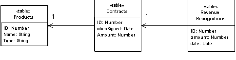

| Home | Articles | Talks | Links | Contact Me | ISA | ThoughtWorks |
Provide a single object for all the behavior on a table

One of the key messages of object-orientation is to bundle together data with the behavior that uses that data. The traditional object-oriented approach is based on objects with identity, along the lines of Domain Model. So if we have an employee class, any instance of that class corresponds to a particular employee. This scheme works well because once we have a reference to an employee, we can execute operations, follow relationships, and gather data on that individual.
One of the problems with Domain Model is the interface with relational databases. In many ways the Domain Model approach treats the relational database like some old granny that's shut up in an attic and nobody wants to talk about. As a result you often need considerable programmatic gymnastics to pull data in and out of the database, transforming between two different representations of the data.
A Table Module organizes domain logic with one class per table in the database, and a single instance of a class contains the various procedures that will act on the data. The primary distinction with Domain Model is that if you have many orders, a Domain Model will have one order object per order, while a Table Module will have one object to handle all the orders.
The strength of Table Module is that it allows you to package the data and behavior together, while at the same time playing to the strengths of a relational database. On the surface Table Module looks much the same as regular objects. The key difference is that Table Module has no notion of an identity for the objects that it's working with. So if you wanted to obtain the address of an employee you would have a method like anEmployeeModule.getAddress(long employeeID). Every time you want to do something to a particular employee you have to pass in some kind of identity reference. Often this will be the primary key that's used in the database.
Usually you use Table Module with a backing data structure that's table-oriented. The tabular data is usually the result of a SQL call, and held in some record set object that mimics a SQL table. The Table Module gives you an explicit method based interface that acts on the tabular data.
The Table Module may be an instance or it may be a collection of static methods. The advantage of an instance is that it allows you to initialize the Table Module with an existing record set, perhaps the result of a query. We can then use the instance to manipulate the rows in the record set. Using instances also makes it possible to use inheritance, so we can write a ManagerModule that contains additional behavior.
The Table Module may include queries as factory methods. The alternative route is to have a Table Data Gateway. The disadvantage of using an extra Table Data Gateway class and mechanism in the design. The advantage of the Table Data Gateway is that it allows you to use a single Table Module on data from different data sources, since the you use a different Table Data Gateway for each data source.
Table Module is very much based on table-oriented data, so obviously it makes sense when you are accessing tabular data. It also puts that data structure very much into the center of the code, so you also want the way you access the data structure to be fairly straightforward.
The most well-known situation where I've come across this pattern is in Microsoft COM designs. In COM the record set is the primary repository of data in an application. Record sets can be passed to the UI where data aware widgets display information. Microsoft's ADO libraries give you a good mechanism to access the relational data as record sets. In this situation Table Module allows you to fit business logic into the application in a well organized way, without losing the way the various elements work on the tabular data.
So you can access data from the database and pass it to a Table Module. You can then use the Table Module to perform calculations of derived data which adds to the underlying data set. Then the you can pass the data set to the UI for display and modification using the table aware widgets. The table aware widgets can't tell if the record sets came directly from the relational database, or if a Table Module manipulated the data on the way out. After modification in the GUI, the data set goes back to the Table Module for validation before it's saved to the database.
However Table Module does not give you the full power of objects in organizing complex logic. You can't have direct instance to instance relationships, and polymorphism does not work well. So for handling complicated domain logic, a Domain Model is a better choice. Essentially you have to trade off Domain Model's ability to handle complex logic versus Table Module's easier integration with the underlying table oriented data structures.
If the objects in a Domain Model and the database tables are relatively similar, then it may be better to use a Domain Model that uses Active Record. Table Module works better than using a combination of Domain Model and Active Record when other parts of the application are based around a common table-oriented data structure. That's why you don't usually see Table Module very much in the Java environment, although that may change as row sets become more widely used.
Time to revisit the revenue recognition example I used in the other domain modelling patterns, but this time with a Table Module. To recap, our mission is to recognize revenue on orders when the rules vary depending on the type of product. In this fantasy example we have different rules for word processors, spreadsheets, and databases.
Table Module is based on a data schema of some kind, usually a relational data model (although in the future we may well see XML an model used in a similar way). In this case I'll use the relational schema from Figure 1.
Figure 1: Database schema for revenue recognition
The classes that manipulate this data are of pretty much the same form, there is one Table Module class for each table. In the .NET architecture there is a data set object which provides an in-memory representation of a database structure. So it makes sense to create classes that operate on this data set. Each Table Module class has a data member of a Data Table, which is the .NET system class corresponding to a table within the data set. This ability to read a table is common to all the Table Modules and so can appear in the superclass
class TableModule...
protected DataTable table;
protected TableModule(DataSet ds, String tableName) {
table = ds.Tables[tableName];
}
The subclass constructor calls the superclass constructor with the correct table name.
class Contract...
public Contract (DataSet ds) : base (ds, "Contracts") {}
This allows me to create a new Table Module by just passing in a data set to the Table Module's constructor
contract = new Contract(dataset);
This keeps the code that creates the data set away from the Table Modules, following the guidelines of using ADO.NET.
A useful capability is to use the C# indexer to get to a particular row in the data table given the primary key.
class Contract...
public DataRow this [long key] {
get {
String filter = String.Format("ID = {0}", key);
return table.Select(filter)[0];
}
}
The first piece of functionality is to calculate the revenue recognition for a contract, updating the revenue recognition tables accordingly. The amount recognized depends on the kind of product we have. Since this behavior mainly uses data from the contract table, I decided to add the method to the contract class.
class Contract...
public void CalculateRecognitions (long contractID) {
DataRow contractRow = this[contractID];
Decimal amount = (Decimal)contractRow["amount"];
RevenueRecognition rr = new RevenueRecognition (table.DataSet);
Product prod = new Product(table.DataSet);
long prodID = GetProductId(contractID);
if (prod.GetProductType(prodID) == ProductType.WP) {
rr.Insert(contractID, amount, (DateTime) GetWhenSigned(contractID));
} else if (prod.GetProductType(prodID) == ProductType.SS) {
Decimal[] allocation = allocate(amount,3);
rr.Insert(contractID, allocation[0], (DateTime) GetWhenSigned(contractID));
rr.Insert(contractID, allocation[1], (DateTime) GetWhenSigned(contractID).AddDays(60));
rr.Insert(contractID, allocation[2], (DateTime) GetWhenSigned(contractID).AddDays(90));
} else if (prod.GetProductType(prodID) == ProductType.DB) {
Decimal[] allocation = allocate(amount,3);
rr.Insert(contractID, allocation[0], (DateTime) GetWhenSigned(contractID));
rr.Insert(contractID, allocation[1], (DateTime) GetWhenSigned(contractID).AddDays(30));
rr.Insert(contractID, allocation[2], (DateTime) GetWhenSigned(contractID).AddDays(60));
} else throw new Exception("invalid product id");
}
private Decimal[] allocate(Decimal amount, int by) {
Decimal lowResult = amount / by;
lowResult = Decimal.Round(lowResult,2);
Decimal highResult = lowResult + 0.01m;
Decimal[] results = new Decimal[by];
int remainder = (int) amount % by;
for (int i = 0; i < remainder; i++) results[i] = highResult;
for (int i = remainder; i < by; i++) results[i] = lowResult;
return results;
}
Usually I would use Money here, but for variety's sake, I'll show this using a decimal. I use a similar allocation method to the one I would use for a Money.
To carry this out, we need some behavior that's defined on the other classes. The product needs to be able to tell us which product type it is. We can do this with an enum for the product type and a lookup method.
public enum ProductType {WP, SS, DB};
class Product...
public ProductType GetProductType (long id) {
String typeCode = (String) this[id]["type"];
return (ProductType) Enum.Parse(typeof(ProductType), typeCode);
}
GetProductType encapsulates the data in the data table. There is an argument for doing this for all the columns of data, as opposed to accessing them directly as I did with the amount on the contract. While encapsulation is generally a Good Thing, I don't do it here because it doesn't fit in with the assumption of the environment that different parts of the system access the data set directly. There's no encapsulation when the data set moves over to the UI. So column access functions really only make sense when there's some additional functionality to be done, such as converting a string to a product type.
The other additional behavior is inserting a new revenue recognition record.
class RevenueRecognition...
public long Insert (long contractID, Decimal amount, DateTime date) {
DataRow newRow = table.NewRow();
long id = GetNextID();
newRow["ID"] = id;
newRow["contractID"] = contractID;
newRow["amount"] = amount;
newRow["date"]= String.Format("{0:s}", date);
table.Rows.Add(newRow);
return id;
}
Again the point of this method is less to encapsulate the data row, and more to have a method instead of several lines of code that would get repeated.
The second behavior is to sum up all the revenue recognized on a contract by a given date. Since this uses the revenue recognition table it makes sense to define the method there.
class RevenueRecognition...
public Decimal RecognizedRevenue (long contractID, DateTime asOf) {
String filter = String.Format("ContractID = {0} AND date <= #{1:d}#", contractID,asOf);
DataRow[] rows = table.Select(filter);
Decimal result = 0m;
foreach (DataRow row in rows) {
result += (Decimal)row["amount"];
}
return result;
}
This fragment takes advantage of the really nice feature of ADO.NET that allows you to define a where clause and then select a subset of the data table to manipulate. Indeed you can go further and use an aggregate function.
class RevenueRecognition...
public Decimal RecognizedRevenue2 (long contractID, DateTime asOf) {
String filter = String.Format("ContractID = {0} AND date <= #{1:d}#", contractID,asOf);
String computeExpression = "sum(amount)";
Object sum = table.Compute(computeExpression, filter);
return (sum is System.DBNull) ? 0 : (Decimal) sum;
}
 |  |
{kind=link}